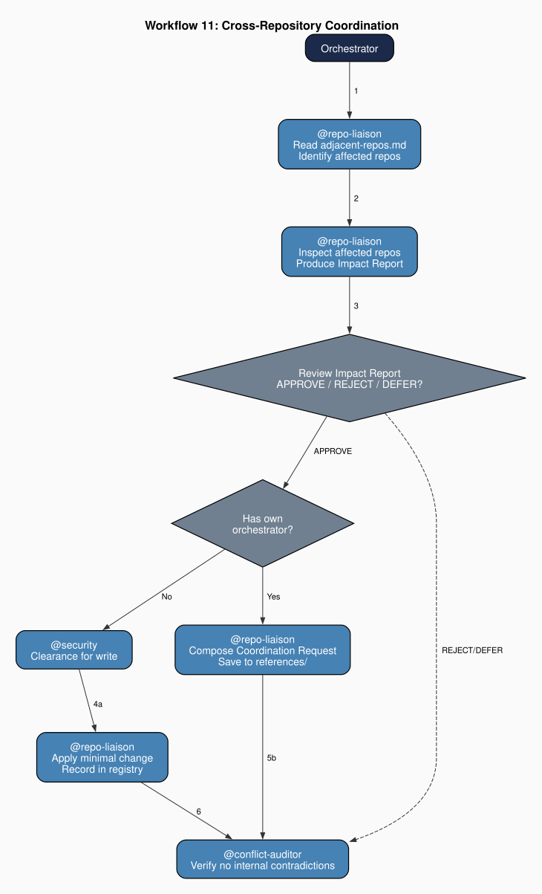

Chapter 16: Agent Communication and Coordination
Part III: The Agents at Work
1. The Problem of Communication at the Boundary
An agent team operates within a bounded project: a repository, a workspace, a defined scope of files and configuration. The boundaries are not merely organizational conveniences. They are the structural preconditions for the authority hierarchies, security rules, and constitutional constraints that make coordinated governance possible. A cleanup agent's jurisdiction is well-defined because the project's boundary is clear. An orchestrator's authority hierarchy is coherent because every claim it adjudicates falls within the same scope.
But the outputs of any agent team do not remain at the boundary. A book-writing team produces a manuscript that a typesetting system in another repository must process. A module-development team produces schemas and templates that an installation tool in another repository must resolve. A governance team detects patterns across a workspace that multiple repositories must respond to. The boundary that organizes the team's internal authority creates an interface with the surrounding ecosystem, and that interface is not governed by a single project's rules.
The immediate coordination problem is communicative before it is operational. Teams do not fail first because they cannot edit a file; they fail because they cannot reliably communicate which state transition occurred, why it matters, and which downstream constraints it triggers. Cross-repository coordination therefore requires both boundary governance and durable communication artifacts that survive session turnover. A coordination event that is not written into a stable artifact is effectively private memory, and private memory is not governable at ecosystem scale.
The governance failure that arises at this interface is not one of intent but of scope. Within a project, the orchestrator can arbitrate the boundary between the cleanup agent's jurisdiction and the domain agent's scope because both are defined in that project's authority hierarchy. The orchestrator cannot arbitrate a tension between its project's authority hierarchy and the authority hierarchy of an adjacent repository. No single orchestrator holds legitimate authority across both. If every agent in the team were permitted to write to adjacent repositories, the constitutional rules of those repositories would be exposed to unilateral modification by agents whose authority was never designed to reach them. The adjacent team's invariant cores, jurisdiction definitions, and security requirements could be silently invalidated by any agent in this project that happened to touch the relevant files.
Coase (1937) analyzed the boundary of the firm as the margin at which the costs of organizing an additional transaction internally rise to meet the costs of organizing it through the market. The agent-team equivalent is the boundary at which internally coordinated governance becomes insufficient. Within the project, the authority hierarchy reduces coordination costs by establishing clear precedence. At the boundary, those authority gradients stop. An agent reaching across the boundary carries its project's authority into a space whose institutional infrastructure was designed for internal governance, not for inter-project exchange. The cost of coordination rises sharply at that boundary, and the risk of inadvertent constitutional violation rises with it. This governance gap is what motivates the institution of the repo liaison.
2. The Repo Liaison as Communication Boundary Agent
The repo liaison is a dedicated boundary agent with a precisely delimited mandate: to govern information flow across repository boundaries without acquiring productive authority or bypassing the adjacent repository's own constitutional rules. The liaison reads, monitors, assesses, and reports. It does not produce primary deliverables. It does not route domain work. It does not modify its project's core architecture. Its entire function is the management of cross-boundary contact.
Hayek (1945) argued that the economic problem of society is not a problem of allocating given resources but of utilizing knowledge not given to anyone in its totality. His analysis rests on a distinction between the kind of knowledge that scientific experts possess - general, communicable, systematizable - and the knowledge of particular circumstances of time and place that belongs to "the man on the spot." The man on the spot knows what the manager at headquarters cannot, because his knowledge is inseparable from his position. The liaison is the man on the spot at the repository boundary: the agent whose knowledge of which adjacent repositories exist, what their agent infrastructure looks like, and what the current state of cross-boundary relationships is cannot be held by any agent inside the project boundary without continuous investment in maintaining that knowledge. The liaison positions itself at the boundary and accumulates exactly the knowledge that position makes available.
The liaison operates through four protocols. Protocol 1 (Impact Assessment) triggers when the orchestrator reports an action that may have propagated across the boundary: the liaison reads the adjacent-repository registry, identifies affected repositories, inspects those repositories' agent files, and produces an Impact Report listing what has become stale, what needs updating, and what the proposed changes are. Protocol 2 (Adjacent-Repository Update) follows an approved Impact Report: the liaison invokes the security agent for clearance, reads the target files in full, applies the minimal change that resolves the staleness, and records every modification in the registry's changelog. Protocol 3 (Orchestrator-to-Orchestrator Coordination) activates when the adjacent repository has its own orchestrator: rather than proposing changes unilaterally, the liaison composes a Coordination Request, a written artifact, that surfaces the cross-cutting decision to both principals for resolution. Protocol 4 (Registry Maintenance) covers the bookkeeping of the boundary relationship itself: adding newly discovered adjacent repositories and retiring entries that have become stale.
The separation between detection and decision is architecturally deliberate. The liaison executes Protocols 1 and 3's discovery phase; the orchestrator approves Impact Reports; the two principals resolve Coordination Requests. This follows the same logic that applies to all consequential actions within the project: no single agent holds both the authority to identify a problem and the authority to unilaterally resolve it across a boundary that falls outside its constitutional scope. The liaison concentrates the boundary knowledge. The orchestrator holds the decision authority. Neither holds both.
The liaison also standardizes communication form. Impact Reports, Coordination Requests, and registry updates convert heterogeneous local observations into typed messages that other agents and principals can consume without reconstructing the original investigative context. This is coordination through artifact design: the liaison does not only move information across boundaries, it transforms information into forms that can be adjudicated under constitutional rules.
3. Communication Artifacts at the Boundary
The adjacent-repository registry is the liaison's primary institutional artifact: a declarative register of every repository this project is known to interact with. Each entry records the repository path, its agent infrastructure location, the nature of the relationship (dependency, shared schema, governance overlap, documentation reference), and a changelog of every cross-boundary action taken since the entry was created. The registry is maintained in the project's references directory and is the primary input for all liaison work.
The registry is not a configuration file. A configuration file specifies parameters that software uses to initialize its state. The registry is institutional memory: a structured account of which projects this project is in a governance relationship with, what has already passed between them, and what the current status of those relationships is. Williamson (1985) analyzed how governance structures adapt to asset specificity. When two parties develop a relationship around assets whose value depends on the continuation of the exchange, both parties have incentives to invest in the governance mechanisms that protect those specific assets. Cross-repository agent infrastructure is asset-specific in exactly this sense. The adjacent repository's documentation is structured to assume that this project's schemas, templates, or protocols remain stable. If those change and the adjacent repository is not updated, its agents will follow stale instructions. The registry is the governance mechanism that makes this specificity visible and manageable. That governance mechanism is, in Nonaka's (1994) terms, an act of combination: the liaison reconfigures explicit knowledge about boundary relationships - repository paths, dependency structures, action histories - into a unified governing artifact, executing at the ecosystem level the same combination pattern that documentation files perform within a project.
Every registered entry supports the liaison's judgment. When this project's orchestrator announces a change, the liaison can consult the registry to determine which adjacent repositories' documentation is likely to have relied on what has changed. An unregistered dependency is invisible to this determination - the liaison cannot assess what it has no record of. Stale registry entries - entries describing repositories that have changed their structure or whose relationship with this project has ended - are flagged rather than silently removed and surfaced to the orchestrator. The audit trail of the boundary relationship is preserved even when the relationship itself has ended, for the same reason the project's own contradiction register preserves a history of resolved contradictions: the past state of the system is sometimes the only evidence available to diagnose a current problem.
Work summaries extend this communication memory from boundary state to workflow state. Teams maintain two layers: event-triggered entries as governing records, and periodic rollups (daily, weekly, monthly) that consolidate those entries for handoff continuity. This summary layer does not replace the registry's boundary ledger. It complements it by providing temporal continuity across sessions. The registry answers: "What is this boundary relationship and what changed?" The work summary answers: "What sequence of decisions and remediations produced the current state?" Together they provide the minimum memory substrate required for reliable inter-agent coordination.
4. Work Summaries as Coordination Infrastructure
Work summaries are not narrative add-ons. They are typed coordination artifacts that bridge workflow state across sessions, agents, and repositories. A workflow log records every action in sequence. A work summary records the governing state transition that later agents must inherit. Without summaries, each agent must reconstruct prior decisions from raw logs, recreating context costs and increasing contradiction risk. With summaries, the team carries forward compressed, auditable state.
Each summary entry uses a minimum schema: trigger type, timestamp, contributing agent, affected scope (files/workflows/repositories), governing disposition, unresolved obligations, and pointers to source artifacts (plan steps, contradiction records, security clearances, or coordination requests). This schema ensures summaries remain machine-aidable and human-reviewable without granting new authority to the summary writer.
4.1 Triggers That Initiate Work-Summary Contributions
A contribution to, or edit of, a work summary is triggered by governance-relevant state change. The canonical trigger catalog is closed and typed.
Governance-relevant includes constitutionally significant events and workflow events that change obligation state, disposition, or cross-boundary traceability.
Closure of the trigger catalog does not authorize event suppression. If classification is uncertain, agents must file a provisional constitutional-event entry within the same session, and workflow progression may continue only under reversible dispositions until classification is resolved. Absence of a canonical trigger match is itself auditable signal, not grounds for omission.
- Workflow step completion: Initiator: executing agent. Required fields: step identifier, output artifact, disposition. Destination: current workflow summary entry. Closure condition: step marked done and linked evidence recorded.
- Blockers: Initiator: blocked agent. Required fields: blocker type, dependency owner, unblock condition, affected scope. Destination: active summary entry plus open-obligations segment. Closure condition: blocker cleared or escalated with decision owner.
- Contradiction resolutions: Initiator: conflict auditor or remediating agent. Required fields: contradiction ID, resolution action, residual risk. Destination: summary entry with pointer to contradiction artifact. Closure condition: contradiction moved to resolved and verified.
- Cross-repository impacts: Initiator: repo liaison after impact assessment. Required fields: affected repository, stale surfaces, approved disposition. Destination: boundary summary entry tied to the registry changelog. Closure condition: disposition resolved as applied, rejected (including verified non-impact), deferred, or transferred to Coordination Request adjudication, with final status linked to workflow close record.
- Security exceptions or destructive-operation clearances: Initiator: security agent. Required fields: clearance scope, constraints, expiry or revocation conditions. Destination: summary entry referencing security evidence. Closure condition: operation completed within scope or clearance revoked.
- Deployment outcomes: Initiator: orchestrator or release-responsible agent. Required fields: target environment, run/result identifiers, observed content state. Destination: release summary entry. Closure condition: outcome verified against expected deployment state.
- Boundary decisions: Initiator: orchestrator principal decision point. Required fields: decision artifact ID, decision statement, alternatives considered, referenced obligations from governing artifact. Destination: coordination summary entry linked to impact report or coordination request. Closure condition: source-artifact obligations are referenced, ownership links are validated, and tracking status is synchronized.
- Unclassified constitutional event: Initiator: any agent detecting a governance-relevant state change that does not match an existing trigger type. Required fields: event description, provisional impact scope, escalation owner, classification deadline. Destination: temporary summary entry flagged unclassified. Closure condition: event reclassified into a canonical trigger type or formally retired as non-constitutional. This is a provisional intake state, not a canonical terminal class.
Boundary-decision summaries are mirror records only. They import disposition verbatim from the governing decision artifact and may not create net-new obligations. Obligation fields are reference-only and must include source artifact identifiers. Any obligation text change requires revision of the governing decision artifact.
Periodic rollups do not introduce new dispositions. They restate event-triggered entries and unresolved obligations for session transfer.
4.2 Amendment Rules and Escalation
Not every event creates a new summary. Clerical amendments are limited to an explicit whitelist: orthography, punctuation, rendering, and broken links. Clerical edits may not modify trigger type, disposition, obligations, scope, or evidence pointers. Any non-whitelisted edit opens a new entry with supersession linkage to the prior record.
Artifact precedence is explicit: workflow logs are execution ground truth, registry changelog entries are cross-boundary write ground truth, and work summaries are derived coordination digests. Summaries must carry shared event identifiers that point back to workflow and registry evidence. If records diverge, summaries are corrected to match governing artifacts rather than treated as independent authority.
Shared event identifiers must be globally unique within the workspace namespace and follow the format {repo-slug}.{workflow-id}.{event-sequence}.{utc-date}. On duplicate detection, closure is rejected and a regenerated identifier with a supersession pointer is required. Summaries lacking resolvable identifiers are invalid for closure and must be remediated before disposition finalization. Objective field mismatches against workflow or registry evidence are clerically corrected immediately. Interpretation disputes about disposition or obligations are marked disputed and escalated.
If two agents interpret a prior summary differently, the summary is not silently overwritten. The entry is marked disputed, non-clerical edits are frozen, and the conflict is escalated to the orchestrator with conflict-auditor cross-reference within the active workflow's escalation window. If that window expires without disposition, the workflow is paused and the dispute is surfaced to principal adjudication rather than resolved through delegated interim authority.
When a disputed or high-impact summary concerns a repository with its own orchestrator, escalation exits single-team governance and enters the Coordination Request path developed in Section 5.
5. Orchestrator-to-Orchestrator Coordination
The governance gap at the repository boundary is most acute when the adjacent repository has its own orchestrator. An adjacent repository with a fully developed agent team - its own authority hierarchy, its own security requirements, its own living document policy - is not a passive target for updates. It is a constitutional peer. The liaison's mandate to govern information flow and to avoid unilateral modification of the adjacent team's constitutional rules comes into direct tension when the proposed change would alter an agent file that falls under the adjacent orchestrator's authority.
Ostrom (1990) found that polycentric governance systems - systems composed of multiple self-governing units - coordinate most effectively when they operate within nested rule structures. Lower-level governance units have authority over their own operational rules, but that authority is exercised within constraints established at higher collective-choice and constitutional levels. The coordination problem the liaison faces when an adjacent orchestrator is involved is a polycentric governance problem. Both orchestrators hold legitimate authority within their own project boundaries. Neither holds authority over the other. The nested structure they share, if any exists, is the workspace itself, but the workspace may have no formal constitutional agreement between projects about how they coordinate.
The Coordination Request is the liaison's institutional response to this problem. Rather than proposing an update directly to the adjacent repository's files - an action that would violate the adjacent orchestrator's constitutional sovereignty over its own agent infrastructure - the liaison composes a written artifact that identifies the triggering change, describes the impact on the adjacent project, proposes a resolution, and surfaces this compound package to both principals for review. The Coordination Request presupposes nothing about the adjacent project's decision. It provides the information needed for that decision while respecting that the decision itself belongs to the adjacent orchestrator and its principal.
The administrative separation the Coordination Request creates is not merely procedural caution. It is a mechanism for maintaining the interpretive intelligibility of the coordination event. If the adjacent project's principal reviews the Coordination Request in a later session and finds it inconsistent with the adjacent project's current state, the record exists. The liaison's detection work and the orchestrator's approval or rejection of the proposed change are separate events, separately logged. The institutional memory of the boundary interaction does not depend on any agent remembering it.
6. Minimal-Footprint and Traceability
The liaison holds a dangerous kind of authority: write access to adjacent repositories. This authority, if exercised carelessly, can degrade the adjacent team's constitutional infrastructure without any agent within that team detecting the change until the next audit cycle. The minimal-footprint invariant governs this authority.
Every adjacent-repo write by the liaison is treated as a destructive operation equivalent. Before any write is executed, the security agent must grant clearance for the specific change, the specific file, and the specific repository. This is not a formality but a structural constraint: the same security protocol that applies to file deletions, force pushes, and configuration changes within the project applies without reduction to cross-boundary writes. The asymmetry matters. An error within the project is bounded by the project's own error-correction mechanisms - the conflict auditor, the living document policy, the investigation-remediation cycle. An error in an adjacent repository falls outside the project's audit cycle, is invisible to the project's health metrics, and is correctable only by the adjacent team when it next runs its own audit.
The minimal-footprint principle specifies how changes, once cleared, must be executed: change only what is necessitated by this project's activity; read the target file in full before writing; make the smallest change that resolves the identified staleness; record every change in the registry's changelog. The read-before-write invariant prevents the liaison from overwriting content in the adjacent repository that has changed since the liaison last consulted it. A repository modified by its own agents since the liaison last read it may contain changes that the proposed update would overwrite. Reading before writing makes this visible and forces the liaison to either adapt its proposed change or surface a conflict to the orchestrator.
Stale entries in the registry are flagged and surfaced to the orchestrator rather than silently removed. Silent removal eliminates the institutional memory of the relationship: the history of what changes passed between the projects, when, and under whose authority. That history may be the only evidence available when a future audit discovers documentation in the adjacent project that references this project's older architecture. The principle of preserving the audit trail applies to the registry as surely as the living document policy's prohibition on silent removal applies within the project itself.
7. The Liaison as Institutional Bridge
The repo liaison completes the separation-of-concerns architecture at the ecosystem level. Within a team, the functional/domain bifurcation separates governance functions from production functions: security agents clear destructive operations; cleanup agents remove stale content; orchestrators route and coordinate; domain agents produce deliverables (Chapter 3). The liaison extends this bifurcation to the team's external boundary: one designated agent holds the project's cross-boundary authority, and no other agent holds that authority in any scope.
The concentration of boundary contact in a single agent is not a bottleneck in the scheduling sense but a bottleneck in the audit sense. Every cross-boundary action traces to the liaison. Every adjacent-repo write appears in the registry. Every coordination request is a written artifact. The liaison is the single point through which boundary interactions are made visible and reviewable. An architecture that distributed cross-boundary write authority across multiple agents - allowing any domain agent that touched an adjacent file to update it directly - would distribute both the authority and the traceability. The resulting boundary would resemble what Hayek (1945) called the dispersion of knowledge: information about what has passed across the boundary would be held locally by each agent that participated in a boundary interaction, rather than aggregated where it could be inspected and verified. The liaison synthesizes records that convert tacit, agent-local knowledge into explicit capital: in Nonaka's (1994) terms, externalization at the ecosystem level - the liaison draws boundary interactions dispersed across agents into an auditable institutional artifact the whole team can read, revise, and act upon.
The liaison's scope restriction, no productive authority and no domain role, is a positive design choice with the same logic as the invariant core's scope restriction on every other agent in the team. The invariant core prohibits any agent from acquiring authority beyond its defined scope because scope creep in individual agents undermines the authority hierarchy. The same principle applies here: if the liaison also held a domain role or a coordination function within the project, its boundary decisions would be entangled with its production decisions. The clean boundary definition is what makes the liaison's audit function defensible. An inspector whose jurisdiction overlaps with the object being inspected cannot generate unambiguous audit reports.
Ostrom (1990) found that sustainable polycentric governance requires boundary rules: rules that clarify who has rights to use the resource and who does not. The adjacent-repo registry and the Coordination Request protocol are the book project's boundary rules at the ecosystem level. They define who may cross the boundary (the liaison, under security clearance), how that crossing must be recorded (in the registry), and what happens when the crossing involves a peer constitutional system (the Coordination Request surfaces the decision to both principals). The liaison's institutional role is not merely technical. It is constitutional: the point in the project's governance architecture where the reach of this project's authority ends and the responsibility to adjacent governance begins. This is the separation-of-concerns principle operating not between agents within a team but between teams within an ecosystem, and it is the same principle all the way down.
8. Workflow 11: Cross-Repository Coordination
The orchestrator's workflow catalog encodes the team's coordination procedures as numbered, deterministic sequences (Chapter 5). The repo liaison is the agent through which cross-repository governance enters this catalog. Workflow 11 defines the Cross-Repository Coordination procedure: the sequence the orchestrator follows when an action within this project may affect an adjacent repository's agent infrastructure.
Workflow 11 (Cross-Repository Coordination) is triggered by the orchestrator when a production or maintenance workflow modifies an architectural artifact, which includes a schema, a template, a protocol definition, and a naming convention, that adjacent repositories' agents depend on. The trigger may arise from any other workflow's output: a new schema emitted by Workflow 9 (LaTeX Production), a template updated during Workflow 7 (Documentation Maintenance), or a naming change that propagates from Workflow 8 (Cleanup) to adjacent documentation. The trigger condition is not the modification itself but the orchestrator's judgment, based on the adjacent-repo registry, that the modification's scope reaches beyond this project's boundary.

The workflow steps implement the separation between detection and decision that governs all consequential actions in the team. Step 1: the orchestrator invokes the repo liaison and passes the triggering action's description. Step 2: the liaison reads the adjacent-repository registry and identifies potentially affected repositories. Step 3: the liaison inspects those repositories' agent files, produces an Impact Report, and the orchestrator reviews it - approving, rejecting, or deferring each proposed update. Step 4: for approved updates to repositories without their own orchestrator, the liaison invokes the security agent for write clearance, then executes the minimal update and records it in the registry's changelog. Step 5: for repositories with their own orchestrator, the liaison composes a Coordination Request rather than writing directly; the request is surfaced to both principals for resolution. Step 6: the conflict-auditor verifies that no new internal contradictions were introduced by the liaison's changes. The workflow closes with the conflict-audit regardless of whether any external writes were executed - even a confirmed non-impact should be recorded as a verified determination rather than left as an unexamined assumption.
Communication closure requires one more artifact layer: a work summary entry that records the trigger, affected repositories, disposition, and follow-on obligations. As Section 4 specifies, this does not duplicate the workflow record. It creates a reusable coordination digest that later workflows can read without traversing full logs.
Workflow 11 interacts with the mandatory-closer pattern that governs all multi-file change workflows (Chapter 5, Section 6). In this project's catalog, workflows that can change architectural artifacts route through Workflow 11 as a conditional follow-on check rather than leaving cross-repository impact to ad hoc memory. This placement makes boundary assessment a structured consequence of architectural change. The liaison determines whether impact is real; the orchestrator's judgment is engaged at the approval step, not at the detection step.
Because Workflow 11 is the structural complement to Workflows 1 through 10, its position in the catalog marks a shift in the team's governance scope. Workflows 1 through 10 govern the team's internal operations: drafting, revising, auditing, maintaining, generating, compiling, and managing citations. Workflow 11 governs the team's interface with the ecosystem. Together they define the full operational perimeter of the agent team's coordinated activity.